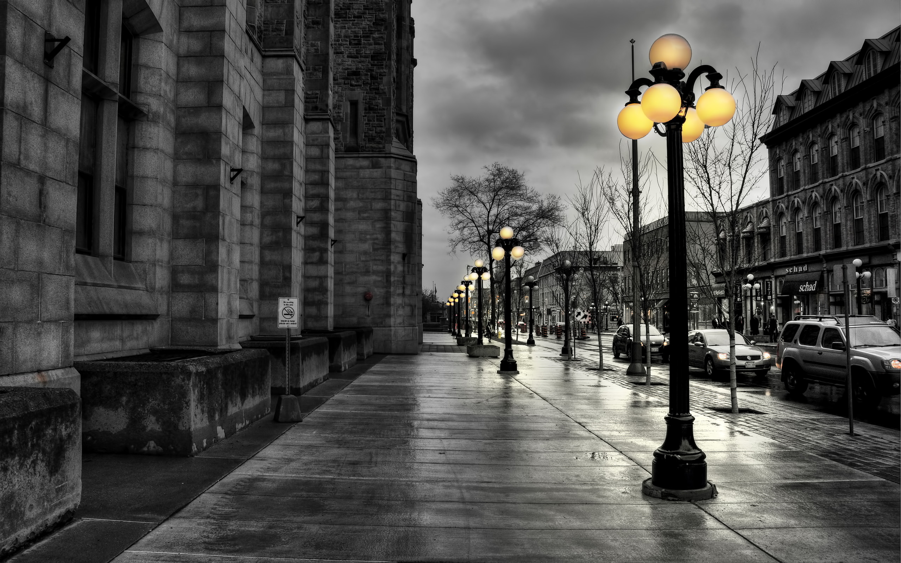
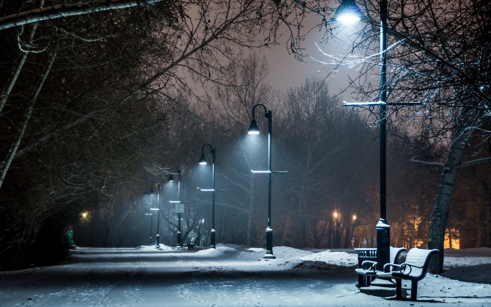
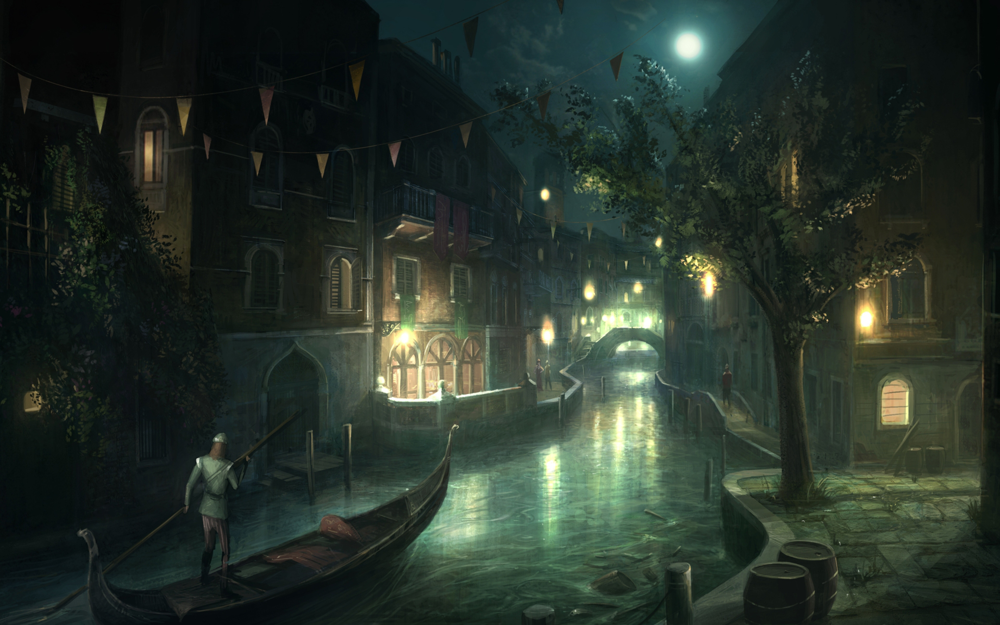

La ciudad de París, dentro de sus estrechos límites administrativos, tiene una población de 2 273 305 habitantes en 2015.2 Sin embargo, en el siglo XX, el área metropolitana de París se expandió más allá de los límites del municipio de París, y es hoy en día, con una población de 12 405 426 habitantes en 2013, la segunda área metropolitana del continente europeo (después de Londres) y la 28ª del mundo.4
La región de París es junto con la de Londres, uno de los núcleos económicos más importantes de Europa.6 Con 607 mil millones de euros (845 mil millones de dólares), produjo más de una cuarta parte del producto interior bruto (PIB) de Francia en 2011.7 La Défense es el principal barrio de negocios de Europa,8 alberga la sede social de casi la mitad de las grandes empresas francesas, así como la sede de veinte de las 100 más grandes del mundo.
Es conocida también como la «Ciudad de la Luz» (la Ville lumière), es el destino turístico más popular del mundo, con más de 42 millones de visitantes extranjeros por año.9 Cuenta con muchos de los monumentos más famosos y admirados del orbe: la Torre Eiffel, la Catedral de Notre Dame, la Avenida de los Campos Elíseos, el Arco de Triunfo, la Basílica del Sacré Cœur, el Palacio de Los Inválidos, el Panteón, el Arco de la Defensa, la Ópera Garnier o el barrio de Montmartre, entre otros. También alberga instituciones de reconocimiento mundial: el Louvre, el Museo de Orsay y el Museo Nacional de Historia Natural de Francia, así como un extenso sistema de educación superior de prestigio internacional. París ocupa un lugar importante en el ámbito de la moda y del lujo.
Oscar Valtierra, licenciado en Negocios Gastronomicos, 22 años.
Ubicaion: Estado de Mexico, Mexico.
Actualmente se encuentra cursando un curso de nextU.com de desarrolador web en sus tiempos libres programa, escribe y viaja.
La torre comenzó a inclinarse tan pronto como se inició su construcción en agosto de 1173. Su altura es de 55,7 a 55,8 metros desde la base, su peso se estima en 14 700 toneladas y la inclinación de unos 4°, extendiéndose 3,9 m de la vertical. Tiene ocho niveles: una base de arcos ciegos con 15 columnas, seis niveles adornados con arcadas abiertas de medio punto, y un campanario en la cima. La escalera interna en espiral tiene 294 escalones. Está considerada, junto a la catedral de la que forma parte, una de las joyas del arte románico.
El gobierno de Italia solicitó ayuda el 27 de febrero de 1964 para evitar su derrumbe, y el 7 de enero de 1990 fue cerrada al público como medida de seguridad. En mayo de 2008, después de la eliminación de 70 toneladas métricas (70 000 kg) de tierra, los ingenieros de la torre anunciaron que se había estabilizado de tal forma que había dejado de moverse por primera vez en su historia. Se indicó que iba a ser estable durante al menos 200 años. Se volvió a permitir la entrada al público el 16 de junio de 2011, después de la finalización de 20 años de trabajo.
En 1987, el conjunto patrimonial de la plaza del Duomo fue declarado Patrimonio de la Humanidad por la Unesco.